Saga universe — comparison
Finished index · Review · QML notes
Run finished workbenchRun preserved original
Original worker HTML is a baseline, not approved native output. Both versions retain disclosed project artwork stand-ins. Full screenshots and metadata are linked below. Different-state comparisons explicitly name the tested transition.
7 books/8 films; both Deathly Hallows parts; arrow-key grid; Continue/resume; branches; pending upcoming item; About and final section; tab alternatives. Continue context menu, focus return and Remove signal boundary.
412×900 portrait
Original worker HTML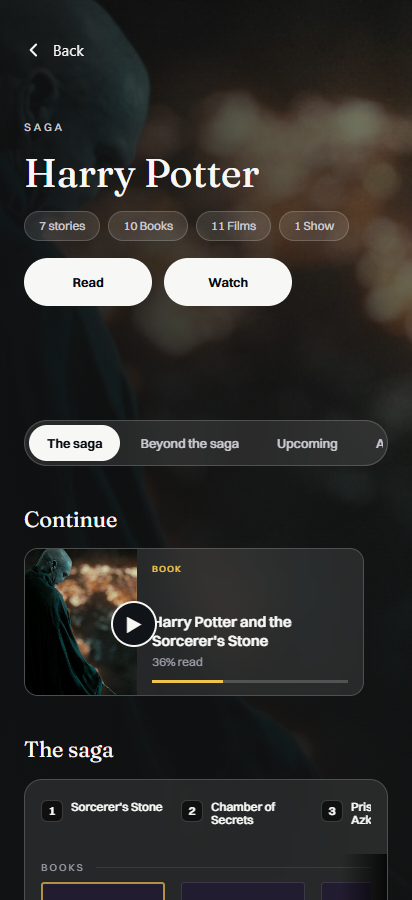
412×900 · 2026-10-31T23:06:39.889Z · SHA-256 514f84d95442d1b09822eccbb76c3394fa264521a748572a1c62104b69bb6fb3
Capture metadata
saga-original-portraitFinished HTML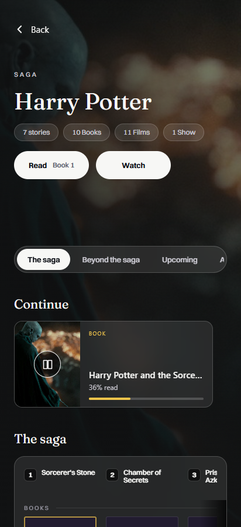
412×900 · 2026-10-31T23:33:21.455Z · SHA-256 15ae5da69a4137c48c70304261ea44592033b8c9a3b138a17ade308270b63d3c
Capture metadata
saga-finished-verified-portrait 900×412 landscape
Original worker HTML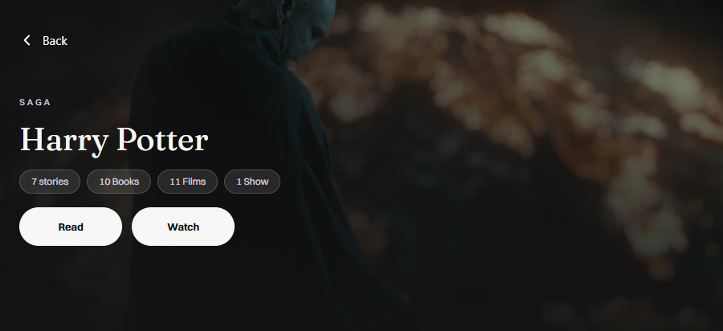
900×412 · 2026-10-31T23:06:42.939Z · SHA-256 c1410f50c7ed08541751ec767f47bf9abe1c605c5c65923c19fb39e883532882
Capture metadata
saga-original-landscapeFinished HTML900×412 · 2026-10-31T23:33:24.010Z · SHA-256 001572038fa5feca557dbe6615b863a57b285e3264d0661e06b9f5d422a4045c
Capture metadata
saga-finished-verified-landscape 1280×700 desktop HTML comparison
Original worker HTML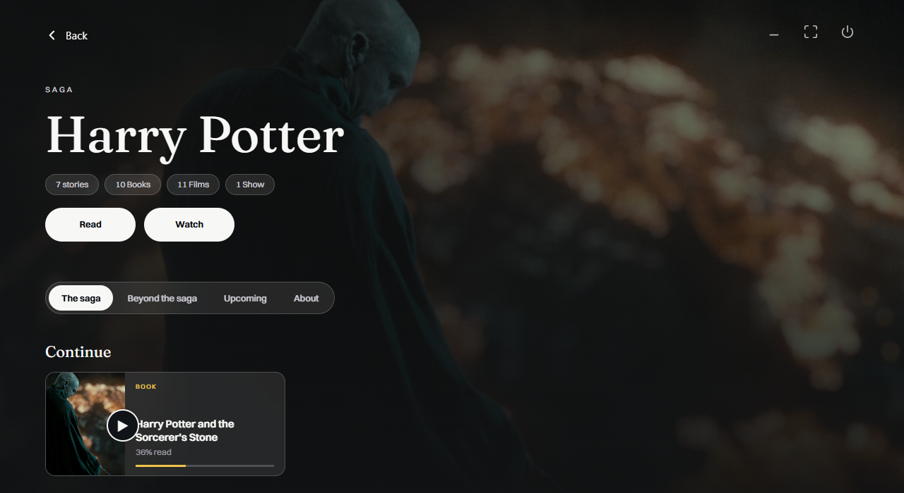
1280×700 · 2026-10-31T23:06:46.466Z · SHA-256 8b60ae266a7b1faec8704e318d9b29ff46baba6fadf0197c9de429a9c828023c
Capture metadata
saga-original-desktop-htmlFinished HTML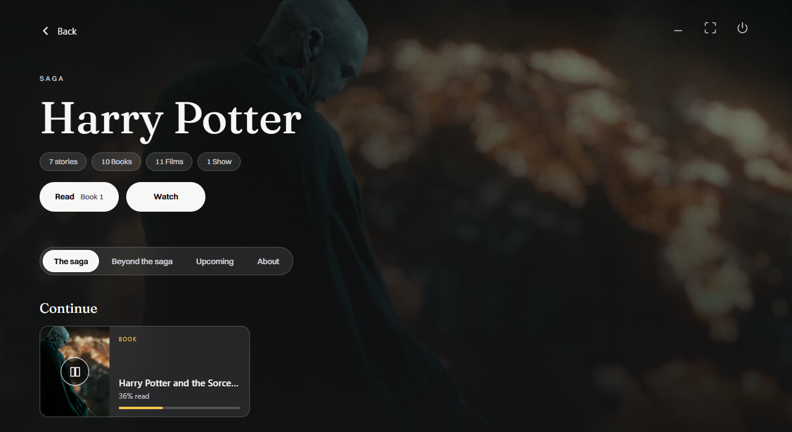
1280×700 · 2026-10-31T23:33:27.305Z · SHA-256 9c17d98557a5c32bcf5a1a70b52227d28ed2039573dd423982ec71537f296f08
Capture metadata
saga-finished-verified-desktop-html 354×792 portrait
Original worker HTML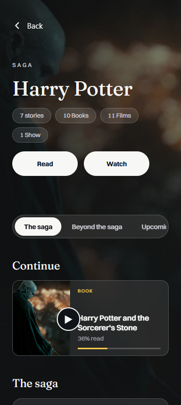
354×792 · 2026-10-31T23:06:41.364Z · SHA-256 1d5579327750be0c175ee736d9d5878e3117c4077014d05c8662fb7f5f9eb90b
Capture metadata
saga-original-portrait-smallFinished HTML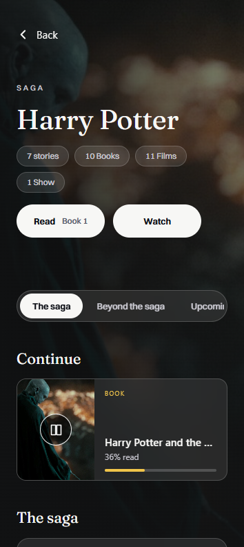
354×792 · 2026-10-31T23:33:22.621Z · SHA-256 2b12a402667de3e3ed9fda4e356c23bf59abb2b3c8f304214e2f1af0bcaff7b4
Capture metadata
saga-finished-verified-portrait-small 792×354 landscape
Original worker HTML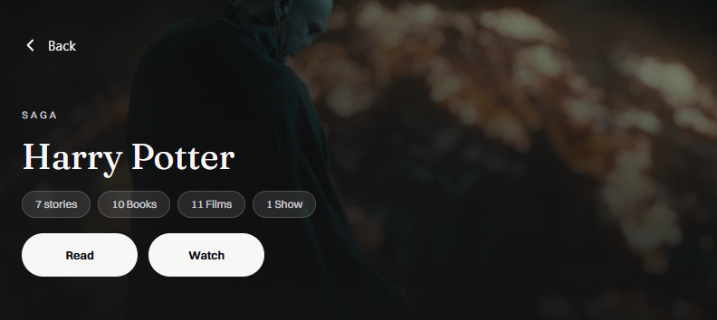
792×354 · 2026-10-31T23:06:44.501Z · SHA-256 14c3889f819ad9ac50f1c6c694648d404cda5e2eeef120610bfd6ba30f00e9f4
Capture metadata
saga-original-landscape-smallFinished HTML792×354 · 2026-10-31T23:33:25.437Z · SHA-256 cb46256e3bae15dcd3403e76e2aa46bb6f767211b8408393f70e296140096fcc
Capture metadata
saga-finished-verified-landscape-small Tablets — finished versions
800×1280 Android tablet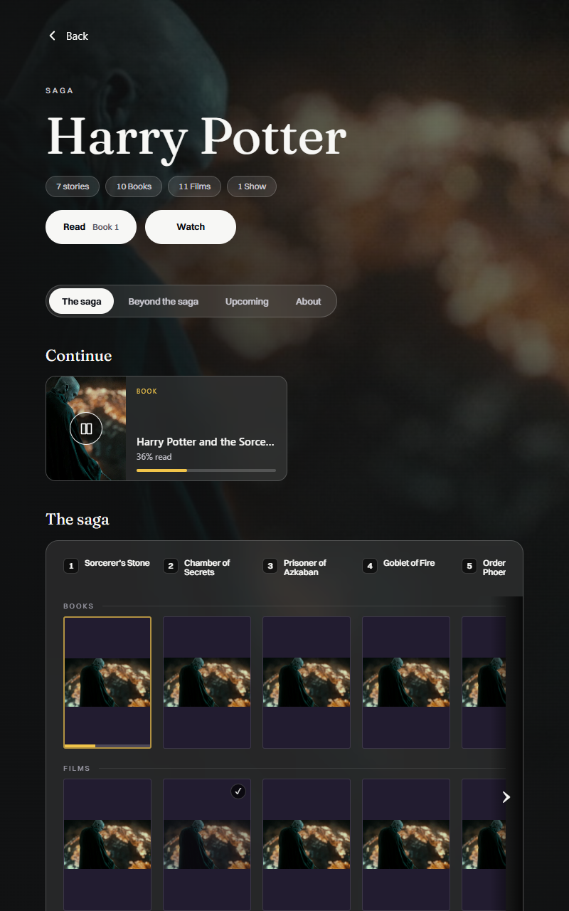
800×1280 · 2026-10-31T23:33:29.477Z · SHA-256 d145a7f38a0eac13857afdd396f58a8e8b93b4ea57a2457566702b73eaeccec1
Capture metadata
saga-finished-verified-tablet-portrait1280×800 Android tablet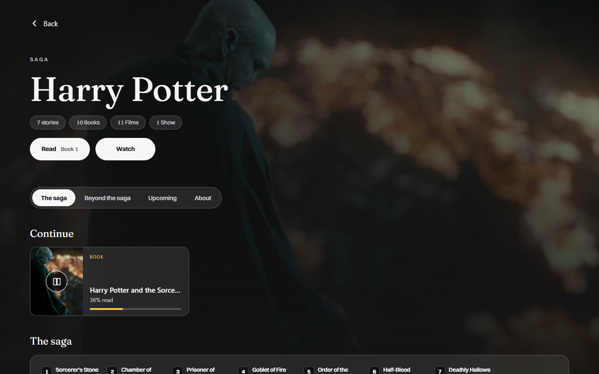
1280×800 · 2026-10-31T23:33:31.125Z · SHA-256 c2de747ebe6ac9b3a4cf8bbe5677a967ee4f7657799af84ceefa5ffcc9f3a268
Capture metadata
saga-finished-verified-tablet-landscape Continue context surface restored
Original worker HTML354×792 · 2026-10-31T23:34:23.726Z · SHA-256 9499f6a51e43546aa4dfb1f6f14d880fcdf17f89829638696a6190c2b6f39329
Capture metadata
saga-original-continue-context-absent-portrait-small-stressFinished HTML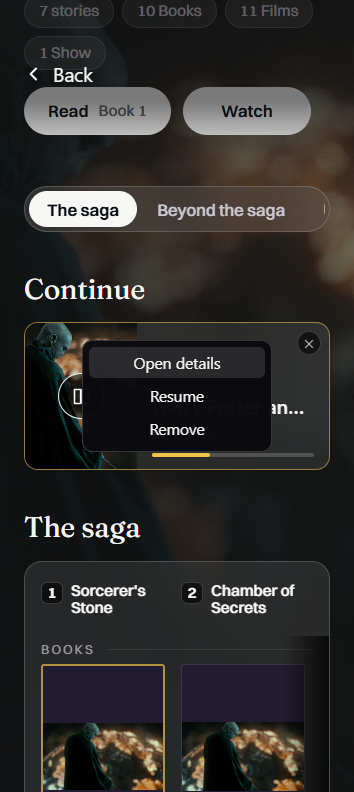
354×792 · 2026-10-31T23:32:36.659Z · SHA-256 eaebd397f601dae321c1454e44995601b0d2aad0f3f50a13fee6b41a4534c3ac
Capture metadata
saga-finished-continue-context-portrait-small-stress Tablet source typography restored
Original worker HTML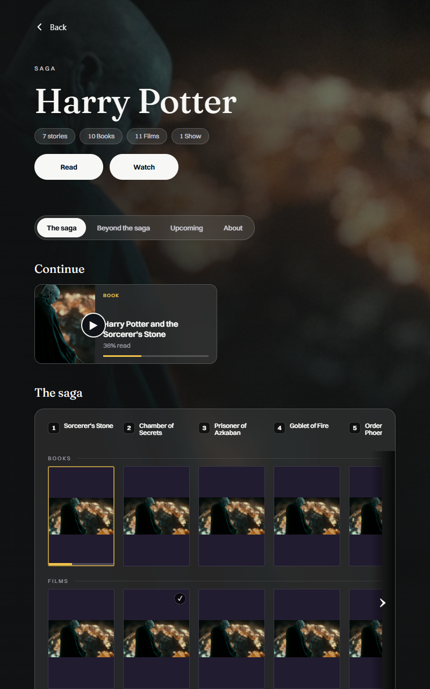
800×1280 · 2026-10-31T23:27:15.577Z · SHA-256 8103baa6e3d78d2de3de95b04ad3e09cc581dd6fc6b88366b2f53726e91ace7e
Capture metadata
saga-original-tablet-portraitFinished HTML800×1280 · 2026-10-31T23:33:29.477Z · SHA-256 d145a7f38a0eac13857afdd396f58a8e8b93b4ea57a2457566702b73eaeccec1
Capture metadata
saga-finished-verified-tablet-portrait B2-018 original tab attempt / proposed alternative is pending Hemanth’s choice.
Evidence ledgers